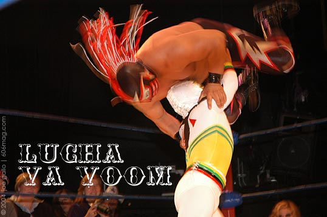
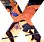
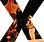
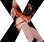
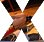
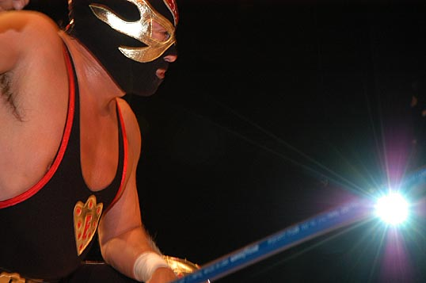

 |
 |
 |
 |
Wrestlers who hate to take their masks off and women who love to take their shirts off. Welcome to Lucha VaVoom. Founded by Lucha Libre/Mexican wrestling fan Liz Fairbairn and Burlesque dancer Rita D'Albert, Lucha VaVoom brings together these two forms of camp. For some this would be more than you could ask for but there's more. Midget Mexican wrestlers. I would like to thank the country of Mexico , our friendly neighbors to the south, for paying a lot of attention to the World Trade Organization and little to the conventions that don't allow politically correct countries like the United States to call little people midgets
In its second year of regular shows at the Mayan Theatre in Los Angeles , Lucha VaVoom has been playing to a sold out house of local hipsters. Liz and Rita decided to take their show on the road, and were rewarded with a successful 3-city tour ending at the Park West on November 6 th . While the local hipsters found their way to the Park West so did a contingent of Mexican wrestling fans complete with matching wrestling masks and children in tow.
The idea behind Lucha VaVoom to take Mexican wrestling and make the matches faster by limiting them to one fall. Add burlesque for some sexy fun. And instead of a ringside announcer have comedians do a running commentary during the event. And the midgets? Well they're just funny.
The Park West show featured legitimate Lucha Libre headliners Misterioso and Blue Demon Jr., burlesque stars Kitten DeVille and Eriocha Bamboo. There was local girl Michelle L'amour founder of the Lavender Cabaret and a surprise special appearance by Tom Kenny, the voice of Sponge Bob, adding color commentary to ringside announcer/comedian Blaine Capatch.
I've seen WWF wrestling, high school wrestling and kids wrestling in the living room and now that I've seen Lucha VaVoom, it proves everything works better with burlesque.
The next show will be February 10 th in LA; the show will be back on the road with a scheduled stop in Chicago in March. Check www.LUCHAVAVOOM.com for more details.
| go to photos |
